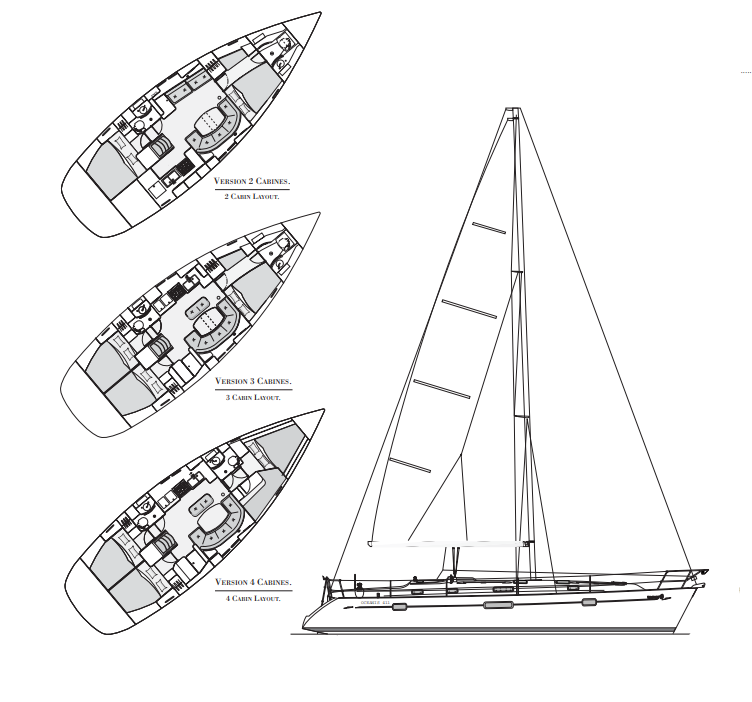

S/Y Amanda
S/Y, eli Sailing Yacht Amanda on ranskalaisen Benetaun valmistama Purjevene.
Kyseistä Oceanis Clipper 411 mallia valmistettiin vuodesta 1997 aina
vuoteen 2008.

S/y Amanda on 4 kabiinilla varustettu malli, jolloin veneeseen mahtuu todella mukavasti miehistöä ja nukkumatilaa riittää jopa 10 hengelle.
Kuvan lähde: Beneteau